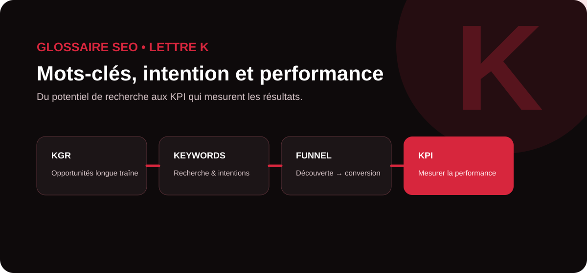

Une stratégie SEO performante ne consiste pas à accumuler des mots-clés. Elle commence par la compréhension de l’intention de recherche, se poursuit par une sélection raisonnée des opportunités et se pilote avec des indicateurs adaptés aux objectifs business. Ce guide MinoSeo explique cinq notions en K pour relier recherche de mots-clés, contenu, conversion et mesure de la performance.

KGR
Le KGR (Keyword Golden Ratio) est une méthode utilisée par certains référenceurs pour repérer des requêtes longue traîne présentant, en théorie, une concurrence relativement faible. Elle compare le nombre de pages dont le titre contient une expression ciblée au volume mensuel estimé de recherches.
Dans son usage traditionnel, le KGR est surtout appliqué à des mots-clés de faible volume. Un ratio bas peut servir de filtre pour repérer des sujets moins disputés, notamment pour un site récent ou une niche très précise.
allintitle: et les volumes de recherche restent des estimations. Avant de produire une page, MinoSeo recommande d’analyser aussi l’intention, la qualité des résultats déjà présents, l’autorité thématique du site et le potentiel commercial de la requête.google keyword planner
Google Keyword Planner, ou Outil de planification des mots clés, est un outil de Google Ads destiné à la recherche de mots-clés pour les campagnes Search. Il permet notamment de découvrir des idées liées à une activité ou à un site, d’observer des estimations de recherches mensuelles et d’obtenir des informations de coût publicitaire.
En SEO, ces données peuvent nourrir une étude sémantique, mais elles doivent être interprétées avec prudence : Keyword Planner est conçu en priorité pour la publicité Google Ads. Un volume élevé ne signifie pas qu’un mot-clé est facile à positionner ni qu’il générera des prospects qualifiés.
La méthode la plus utile consiste à croiser les suggestions de l’outil avec l’analyse des SERP, les données de Google Search Console, la saisonnalité, l’intention de recherche et les objectifs de l’entreprise.
Keyword funnel concept
Le Keyword Funnel Concept consiste à organiser les mots-clés selon l’étape du parcours de décision à laquelle se trouve l’internaute. Une personne qui découvre un problème ne formule pas les mêmes requêtes qu’un prospect prêt à demander un devis ou à acheter.
| Étape | Intention dominante | Exemple SEO |
|---|---|---|
| Découverte | Comprendre un sujet ou un problème | « comment améliorer visibilité Google » |
| Évaluation | Comparer des méthodes ou solutions | « SEO vs Google Ads » |
| Décision | Choisir un prestataire ou une offre | « agence SEO GEO » |
| Action | Prendre contact, acheter, demander un devis | « audit SEO professionnel » |
Cette approche aide à construire un écosystème de contenus cohérent. Les guides pédagogiques peuvent capter la demande informationnelle, tandis que les pages services, études de cas et contenus de comparaison accompagnent progressivement le visiteur vers une décision.
Keyword stuffing
Le keyword stuffing, ou bourrage de mots-clés, consiste à répéter artificiellement des expressions ou des variantes dans une page dans le but de manipuler son classement. Cela peut prendre la forme de paragraphes peu naturels, de listes de villes répétitives ou d’une accumulation de requêtes sans réelle valeur pour le lecteur.
Cette pratique est explicitement considérée par Google comme une technique de spam. Elle dégrade également la lisibilité, la crédibilité et l’expérience utilisateur. Une page moderne doit traiter un sujet en profondeur avec un vocabulaire naturel plutôt que chercher une densité mécanique.
KPI
KPI signifie Key Performance Indicator, ou indicateur clé de performance. Un KPI sert à mesurer l’avancement vers un objectif précis. En SEO, toutes les données disponibles ne sont donc pas nécessairement des KPI : l’indicateur doit être relié à une décision ou à un résultat attendu.
| Objectif | KPI possibles | Lecture utile |
|---|---|---|
| Visibilité | Impressions, positions, couverture de requêtes | Mesurer la présence dans les résultats |
| Acquisition | Clics organiques, sessions SEO, CTR | Évaluer le trafic réellement capté |
| Engagement | Pages consultées, interactions, engagement | Comprendre la qualité de la visite |
| Business | Leads, ventes, taux de conversion, chiffre d’affaires SEO | Relier le référencement aux résultats commerciaux |
Un bon tableau de bord évite de suivre des dizaines de métriques sans hiérarchie. MinoSeo privilégie une lecture croisée : visibilité, trafic, comportement, conversions et évolution des pages stratégiques. Les KPI doivent aussi être comparés dans le temps afin de distinguer une fluctuation ponctuelle d’une tendance durable.
Comment utiliser ces notions dans une stratégie SEO ?
Ces cinq concepts couvrent tout le cycle de pilotage. Le KGR peut aider à filtrer certaines opportunités longue traîne ; Google Keyword Planner enrichit la recherche de requêtes ; le Keyword Funnel Concept relie les contenus au parcours client ; l’absence de keyword stuffing protège la qualité éditoriale ; enfin, les KPI permettent de vérifier si les efforts produisent des résultats.
MinoSeo, agence SEO/GEO depuis plus de 15 ans, accompagne les entreprises dans la recherche sémantique, la stratégie de contenu, l’optimisation technique et le suivi des performances afin de transformer les mots-clés en visibilité utile et en opportunités commerciales.
Vos mots-clés soutiennent-ils réellement vos objectifs business ?
Identifiez les requêtes prioritaires, les contenus à renforcer et les KPI à suivre avec une stratégie SEO/GEO structurée.
Demander un audit gratuit